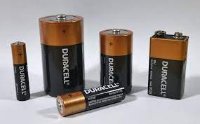

Zjistěte všechno o bateriích a co jste o nich ještě nevěděli.
Vítejte ve světě baterií! Připravte se na vzrušující cestu do úžasného světa energetických zdrojů, které posouvají naši moderní společnost kupředu. Baterie, ty malé a všudypřítomné zařízení, jsou opravdu něčím úžasným. Povíme vám vše, co potřebujete vědět o těchto skvělých výrobách..
Baterie jsou elektrochemická zařízení, která uchovávají energii a umožňují její přenos do různých elektronických zařízení, která denně používáme. Existuje nespočet typů baterií, které se liší svými vlastnostmi a aplikacemi. Od malých knoflíkových baterií v hodinkách po obrovské lithium-iontové baterie v elektrických automobilech - baterie jsou všude kolem nás.
Lithium-iontové baterie jsou jedním z nejrozšířenějších typů baterií dnes. Mají vynikající energetickou hustotu a dlouhou životnost, což je dělá ideálními pro mobilní telefony, notebooky, digitální fotoaparáty a mnoho dalších zařízení. Tyto baterie nabízejí vysokou kapacitu a rychlé nabíjení, což znamená, že můžete strávit více času používáním zařízení a méně času čekáním na nabíjení.
Další zajímavou technologií jsou baterie s dlouhou životností, které se vyznačují mimořádně dlouhou životností cyklů nabíjení a vybíjení. To znamená, že můžete tyto baterie opakovaně nabíjet a vybíjet mnohem déle než běžné baterie. Tyto baterie jsou ideální pro solární systémy, elektrická vozidla a domácnosti, které chtějí snížit svou závislost na externí elektrické síti.
V posledních letech také zaznamenáváme rychlý pokrok v oblasti nanotechnologie baterií. Výzkumníci pracují na vývoji baterií s ještě vyšší energetickou hustotou a kratší dobou nabíjení. To by mohlo vést k revoluci v oblasti elektromobility a umožnit nám využívat elektrickou energii ještě efektivněji.
Je důležité si uvědomit, že baterie mají i svou ekologickou stránku. Správná likvidace použitých baterií je nezbytná, aby se minimalizoval jejich vliv na životní prostředí. Mnoho zemí má programy pro recyklaci baterií, které pomáhají zachovat přírodní zdroje a snižovat znečištění.
Takže, až příště uvidíte tu malou, ale mocnou baterii v různých zařízeních, pamatujte si, jak důležitou roli hraje. Baterie jsou tady, aby nám poskytly nezávislost a pohodlí v digitálním světě. Udržujte je dobře nabité a dbajte na jejich správnou likvidaci, abyste pomohli chránit naši planetu. Baterie jsou skutečně zázraky moderní technologie, které nám umožňují žít v době neomezených možností.